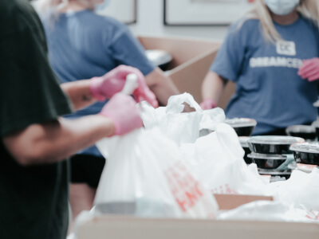
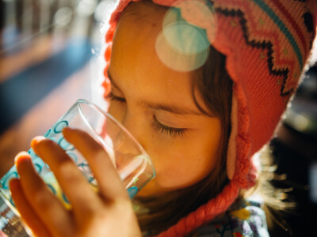
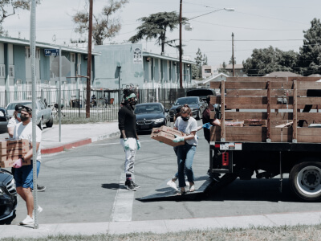
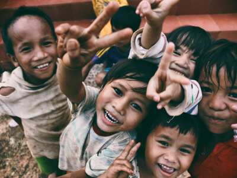

Bongshai Foundation sparks a grassroots transformation by equipping villagers with the knowledge, tools, and confidence to build thriving micro-industries in their own communities.
Explore Our Programs Get InvolvedWe nurture grassroots entrepreneurship through four core development tracks designed to transform rural skills into sustainable livelihoods.

Training and tools for rural agricultural production, helping villagers build viable farming-based micro-industries. Specific program details pending confirmation.

Local food processing capacity to add value to rural harvests and reduce waste. Specific program details pending confirmation.

Supporting rural artisans in mini textiles and traditional craft production. Specific program details pending confirmation.

Local storage and sales infrastructure connecting village producers to buyers. Specific program details pending confirmation.
As part of the Bongshai Group ecosystem, Bongshai Foundation channels organizational expertise into social impact. Rather than providing short-term aid, the foundation invests in long-term capacity building.
By establishing localized storage, providing technical apprenticeships, and facilitating access to seed funding, we enable villagers across Bangladesh to produce, package, and sell goods directly from their hometowns.
Learn More About Our MissionCommon questions regarding Bongshai Foundation's initiatives, focus areas, and community impact.
Our core mission is to equip rural villagers across Bangladesh with the vocational skills, equipment, and market linkages needed to run sustainable micro-enterprises right in their villages.
They create localized employment, reduce forced migration to Dhaka and major urban centers, support female financial independence, and capture value from local agricultural harvests.
Bongshai Foundation is the dedicated non-profit social development arm within the Bongshai Group (which includes Bongshai Housing, Bongshai Steel, and Bongshai Engineering & Construction).